Upper gastrointestinal bleeding: the debrief for week 1, The collapse in the bathroom
A man collapses in his bathroom. It looks like his heart. It is not.

- Arthur Pell, 68. Collapsed at home at 07:50, getting up from the toilet. Out for half a minute.
- In the emergency department at 08:42: pulse 138 and irregular, blood pressure 96/58, grey and clammy. NEWS2 (the national early warning score) 5.
- Known atrial fibrillation, on apixaban. Also naproxen for six weeks, aspirin, and iron started a month ago for a “low blood count”.
- This debrief is about the condition he had: bleeding from the upper gut. What it is, why it happens, how to find it, and what to do in the first 24 hours.
An upper GI bleed is bleeding from the gullet, the stomach or the first part of the small bowel.
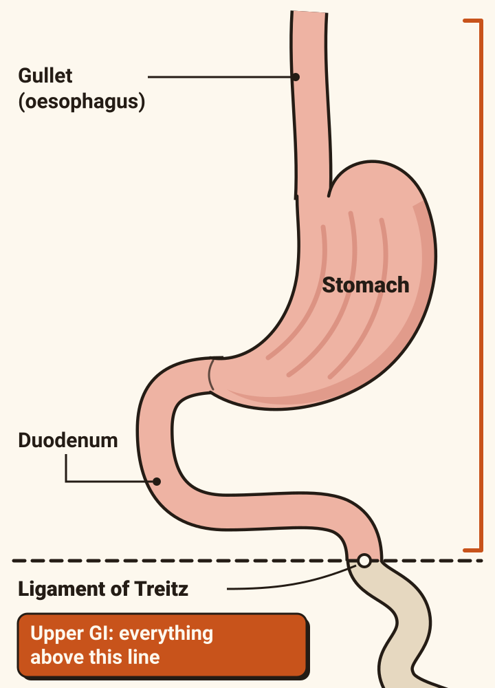
- “Upper GI” (gastrointestinal) means anywhere above the ligament of Treitz, the point where the duodenum ends and the rest of the small bowel begins.
- It is common: about 134 people in every 100,000 each year in the UK, roughly one every six minutes.
- It is dangerous: about 1 in 10 people admitted with it die, and that figure has barely moved in decades.
Ulcers first, varices second, and a short list of others.
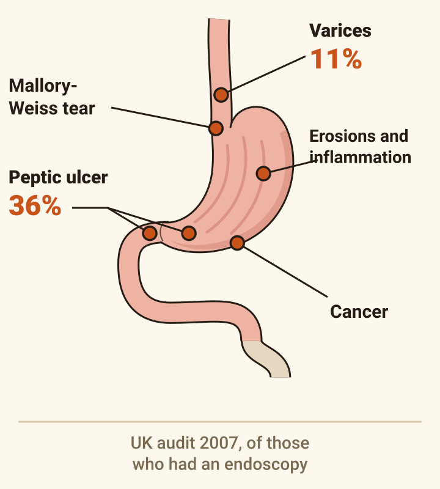
- Peptic ulcer (a raw crater in the lining of the stomach or duodenum): the commonest cause. 36% of those who had an endoscopy in the 2007 UK national audit.
- Varices (swollen veins in the gullet from liver scarring): 11% in the same audit, and among the most deadly (15% died).
- In the 2022 re-audit: ulcer 32%, varices 10%, and in 33% nothing abnormal was found.
- The others: inflammation and erosions of the gullet, stomach or duodenum; a Mallory-Weiss tear (a split in the lining after forceful retching); cancer; and, in some, no cause found.
- Heavy drinking does not mean varices. Even in people with alcohol-related liver disease, an ulcer is still the commoner cause.
The stomach lining protects itself from acid. Take the protection away and acid digs down to a blood vessel.
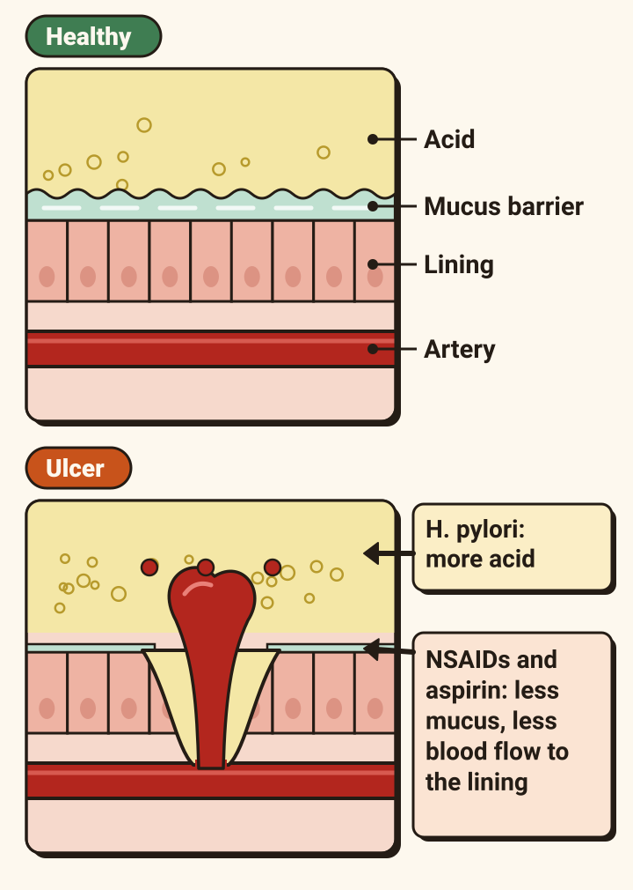
- Anti-inflammatory painkillers (NSAIDs: naproxen, ibuprofen, and aspirin) switch off the chemistry that makes protective mucus and keeps blood flowing to the lining. They raise the risk of an upper GI bleed about four-fold.
- Helicobacter pylori, a bacterium that lives in the stomach, pushes acid output up.
- The bleeding starts when the ulcer erodes into a blood vessel at its base.
- Arthur had six weeks of naproxen on top of daily aspirin, and a fortnight of burning in the upper abdomen.
- He was also on a blood thinner. In the 2022 UK audit, people who bled while on an anticoagulant were more likely to die in hospital (odds about 1.4 times higher).
The pulse rises early. The blood pressure falls late.
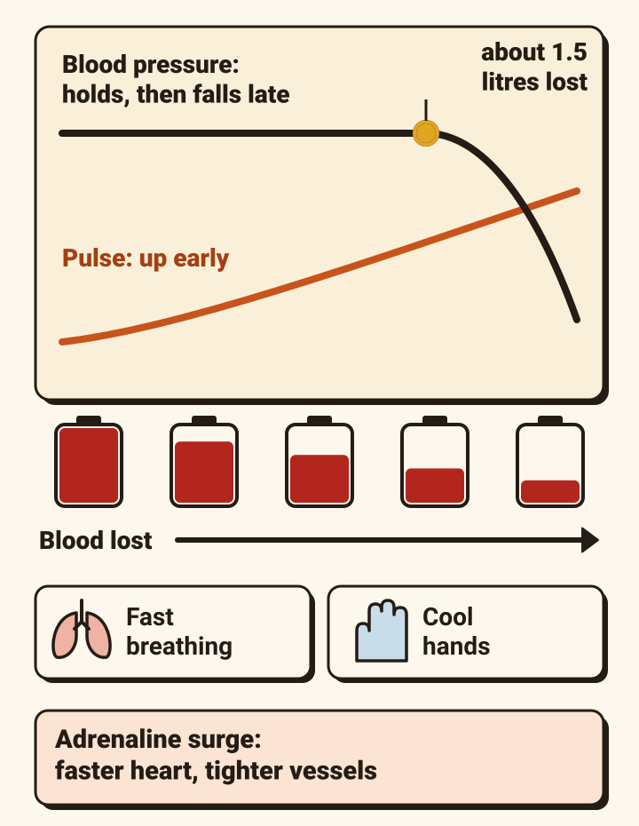
- Fast breathing is often the first sign. A fast, thready pulse comes early.
- The body answers blood loss with a surge of adrenaline. The heart speeds up and the blood vessels in the skin clamp down: cool hands, pallor, slow capillary refill.
- A low blood pressure is a late sign. By the time it falls, about a litre and a half may already be gone.
- Two warnings. Older people, and anyone on a beta-blocker, may not raise their pulse at all. And the haemoglobin (the blood count) can look normal at first, because it takes time to fall.
- Arthur at 08:42: pulse 138, blood pressure 96/58, cool to the elbows, capillary refill 3 seconds.
Half the time it announces itself. The rest of the time it hides.
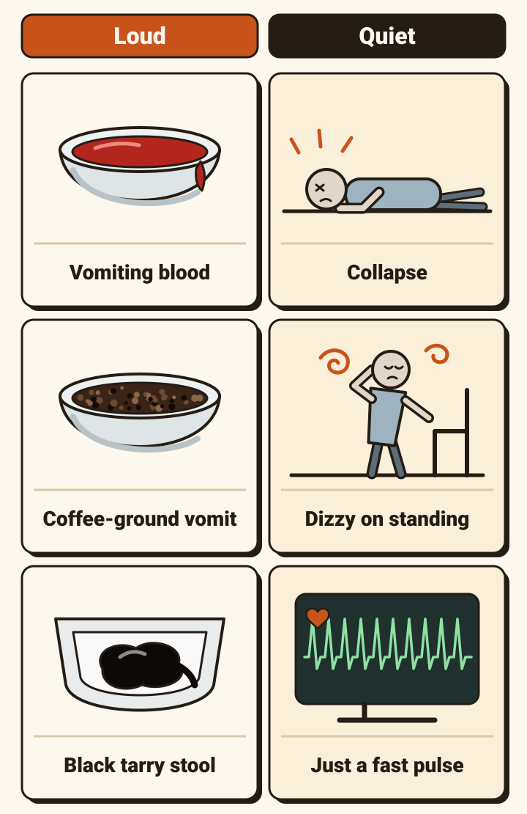
- Loud. Vomiting blood (haematemesis), in about half. Black, tarry stool (melaena), in about 7 in 10. Vomit that looks like coffee grounds counts too.
- Quiet. A collapse or near-faint. Dizziness. Sometimes only a fast pulse or a low blood pressure, with no blood seen at all.
- Melaena is black because the blood is chemically changed on its way through the gut. Iron tablets and bismuth also turn the stool black, so the history alone can mislead.
- Fresh red blood from the back passage can still be an upper bleed, if it is brisk.
- Coffee-ground vomit can come from a blocked bowel or from sepsis rather than from bleeding.
Before any blood test comes back: what do you do at the bedside?
- Pulse
- 138 irregular
- Blood pressure
- 96/58
- Arthur, 68. Collapsed getting up from the toilet. No chest pain. Palpitations on and off all week.
- Grey, clammy.
- Known atrial fibrillation. Father “died of his heart”.
- He mentions his stools: “Darker than usual. I put that down to the iron tablets.”
Which bedside examinations would settle this?
8 / 27 · The answer is hidden. Decide first.
A rectal examination and a lying and standing blood pressure found the bleed before the laboratory did.
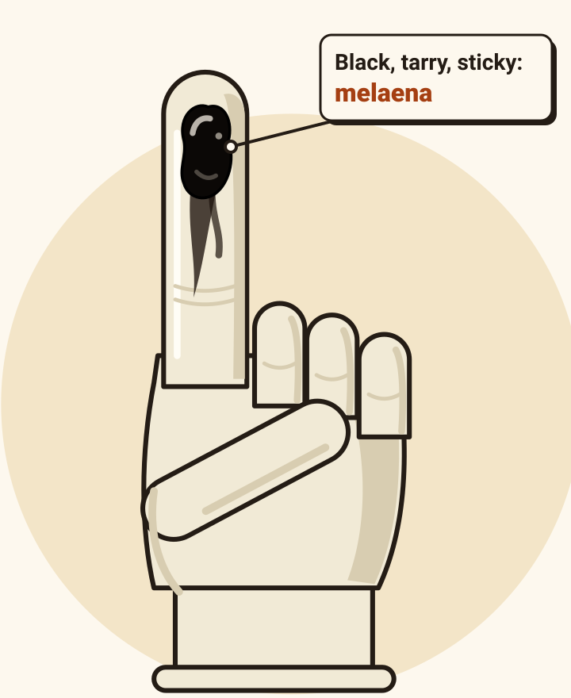
- Lying
- 96/58
- Pulse
- 138
- Standing, 1 min
- 74/48
- Pulse
- 152
- The glove. Black, tarry stool on rectal examination. This is melaena: digested blood.
- Standing him up. Lying 96/58, pulse 138. Standing at one minute 74/48, pulse 152, and he greys out.
- In a shocked patient with no clear cause, do the rectal examination early. Think of a hidden bleed in any unexplained faint or drop in blood pressure on standing.
- The history had already given the reasons to look: naproxen, aspirin, a blood thinner, iron for a “low blood count”, a fortnight of indigestion.
Three results point to a bleed from the upper gut.
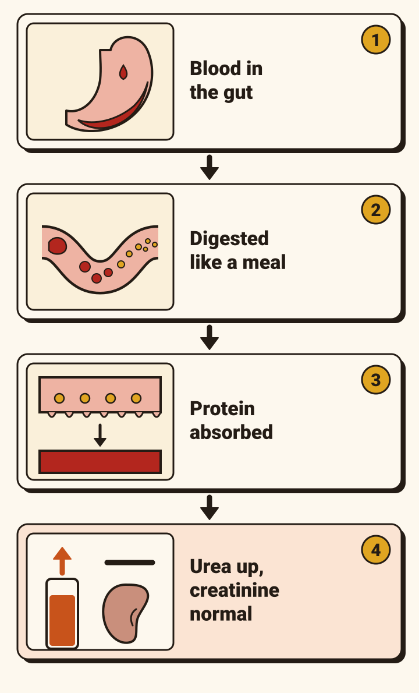
Haemoglobin
- Arthur
- 72 g/L. It was 134 three months ago.
- What it tells you
- He has lost a great deal of blood.
Urea, with creatinine
- Arthur
- Urea 14.6 mmol/L (5.1 three months ago). Creatinine 92, normal.
- What it tells you
- Blood in the gut is digested and its protein absorbed, so urea climbs while the kidneys are fine.
Ferritin (iron stores)
- Arthur
- 9 µg/L, low.
- What it tells you
- In Arthur, that the bleed has been slow and going on for weeks. Our reasoning
Group and crossmatch
- When
- Sent early, so blood is ready before he needs it.
- A urea raised out of proportion to the creatinine suggests a significant bleed. It does not prove one.
- Also send: liver tests and a clotting screen. An ECG, which is mandatory before terlipressin in anyone over 65. A chest film only if the chest is abnormal.
Three results looked like something else. Each has an innocent explanation in a bleeding man.
Troponin 34 ng/L (normal below 14)
- What it looks like
- A heart attack.
- What it is
- Myocardial injury, or a type 2 myocardial infarction, from demand: the heart needs more oxygen than it is getting, with no blocked artery. Bleeding and anaemia are recognised causes. Treat it as a blocked artery and you anticoagulate a man who is bleeding.
- A caution
- Bleeding also raises the risk of a true heart attack for some weeks, so do not assume type 2 without thought.
Clotting screen normal (INR 1.1, APTT 31 seconds)
- What it looks like
- “Not anticoagulated.”
- What it is
- He took apixaban at 07:30. The standard clotting tests are unreliable for drugs of this type.
ECG: fast atrial fibrillation
- What it looks like
- The cause of the collapse.
- What it is
- The response to blood loss (cards 20 and 21). Our reasoning
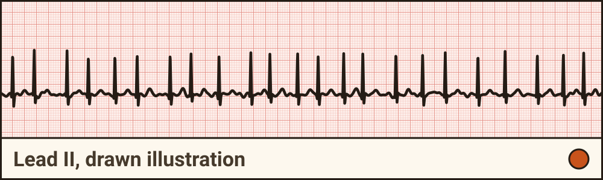
Swipe sideways to see the whole strip.
- A fourth: the first haemoglobin can be falsely reassuring in a fast bleed. A blood-gas haemoglobin is quick but unreliable while bleeding is active.
The Glasgow-Blatchford score, worked out at the door, tells you who can go home.
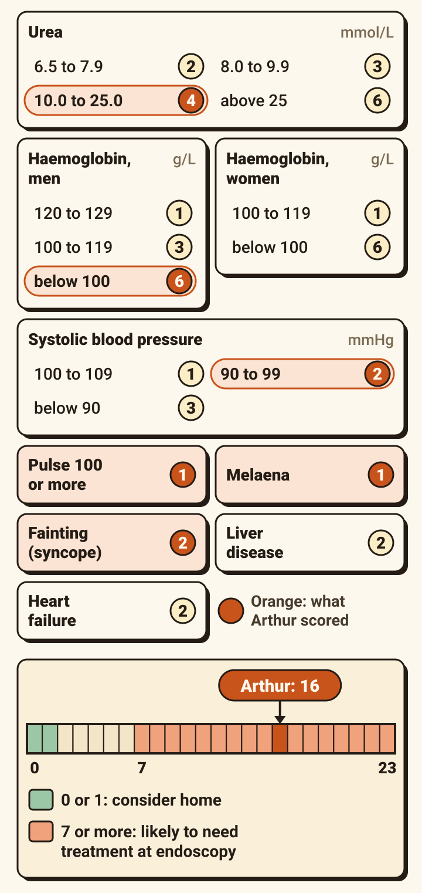
- BSG: calculate the Glasgow-Blatchford score (GBS) at presentation.
- It counts eight things: urea, haemoglobin, systolic blood pressure, pulse, melaena, fainting, liver disease and heart failure. The score runs from 0 to 23.
- 0 or 1: consider managing as an outpatient. Of people scoring 0 or 1, 3.4% needed treatment or died, and 0.4% died.
- 7 or more is the score that best predicts needing treatment at endoscopy.
- It is good at predicting who needs something done, and poor at predicting death. The Rockall score predicts death, and its full version needs the endoscopy findings.
- Use the first set of observations, not the set after two bags of fluid. The score was built on values at admission. Our reasoning
- Arthur: urea 14.6 = 4, haemoglobin 72 = 6, systolic 96 = 2, pulse 138 = 1, melaena = 1, fainting = 2. Total 16 out of 23.
Endoscopy finds the source, grades it and treats it, all in one go.
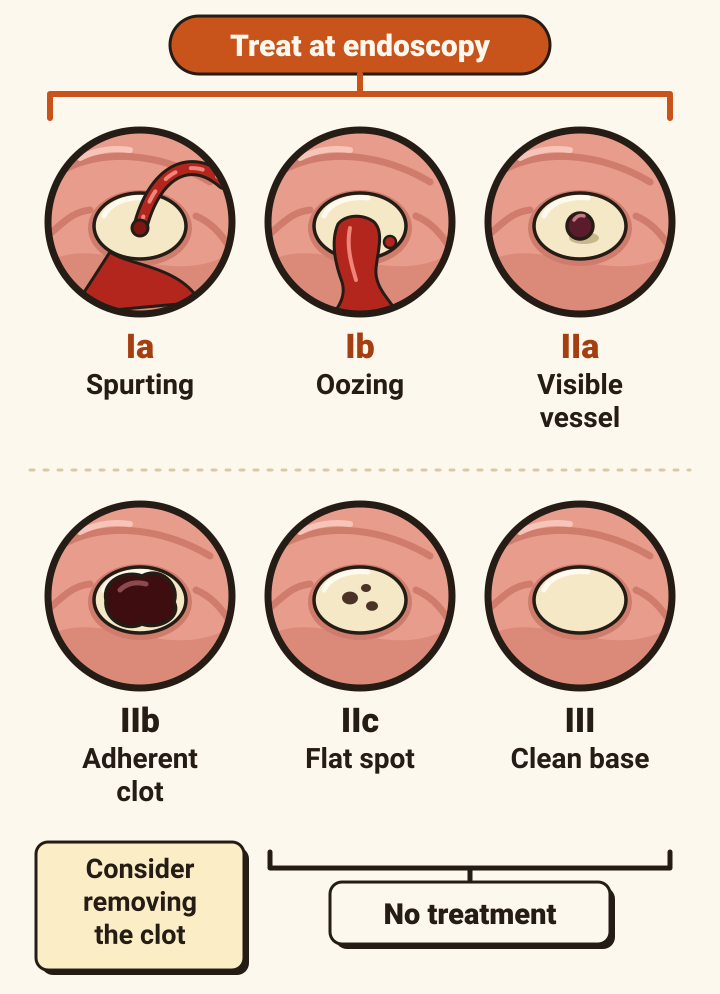
- Endoscopy (OGD, a camera passed through the mouth) is the main test and the main treatment.
- BSG: within 24 hours of arriving. Sooner, once resuscitated, if he is still unstable. European guidance does not recommend routine endoscopy within the first 12 hours: outcomes are no better.
- The endoscopist grades an ulcer by the Forrest classification: Ia spurting, Ib oozing, IIa a visible vessel that is not bleeding, IIb a stuck-on clot, IIc a flat dark spot, III a clean base.
- Ia, Ib and IIa are treated there and then, with clips or heat. An adrenaline injection is never used on its own.
- IIc and III need no treatment at endoscopy.
The first 24 hours in six steps: the BSG care bundle, as it is printed.
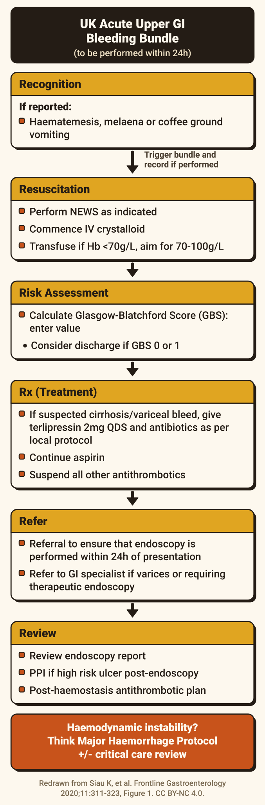
In plain English:
Recognition. If reported: haematemesis, melaena or coffee-ground vomiting.
Resuscitation. Perform NEWS. Start intravenous crystalloid. Transfuse if haemoglobin is below 70 g/L, aiming for 70 to 100.
Risk assessment. Calculate the Glasgow-Blatchford score. Consider discharge if 0 or 1.
Rx (treatment). If cirrhosis or a variceal bleed is suspected: terlipressin 2 mg four times a day and antibiotics by local protocol. Continue aspirin. Suspend all other antithrombotics.
Refer. Endoscopy within 24 hours of presentation. A GI specialist if varices, or if endoscopic treatment is needed.
Review. Review the endoscopy report. A PPI (acid-suppressing drug) if a high-risk ulcer is found. A plan for the antithrombotics after the bleeding is stopped.
Unstable? Think major haemorrhage protocol and a critical care review.
British Society of Gastroenterology, with the Society for Acute Medicine and the upper GI surgeons, 2020. Written for non-specialists, for the first 24 hours.
You were scored on our version of the bundle. Here is where the two differ.
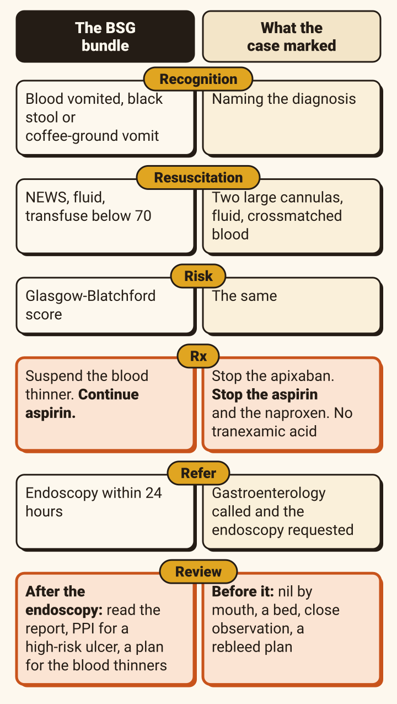
- Nil by mouth, a bed and a senior review are not bundle items. They are sensible preparation. Our reasoning
- Stopping the naproxen (NICE) and giving no tranexamic acid (the HALT-IT trial) are right. They are not in the bundle either.
- Aspirin is the one real disagreement. See card 18.
His haemoglobin is 72. The rule says transfuse below 70. Do you give blood?
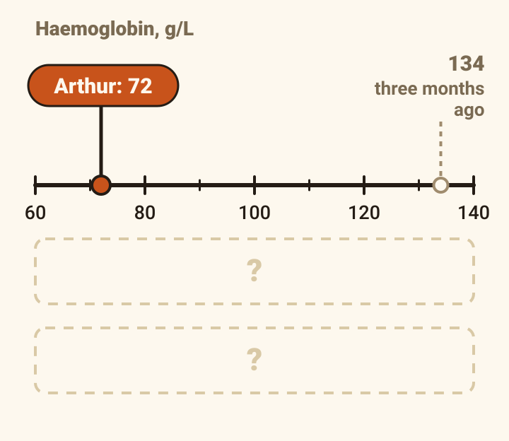
- Haemoglobin 72 g/L. Three months ago it was 134.
- Pulse 138. Blood pressure 96/58. Standing: 74/48.
- Black stool on the glove.
16 / 27 · The answer is hidden. Decide first.
Yes. The thresholds are for stable patients, and he is not stable.
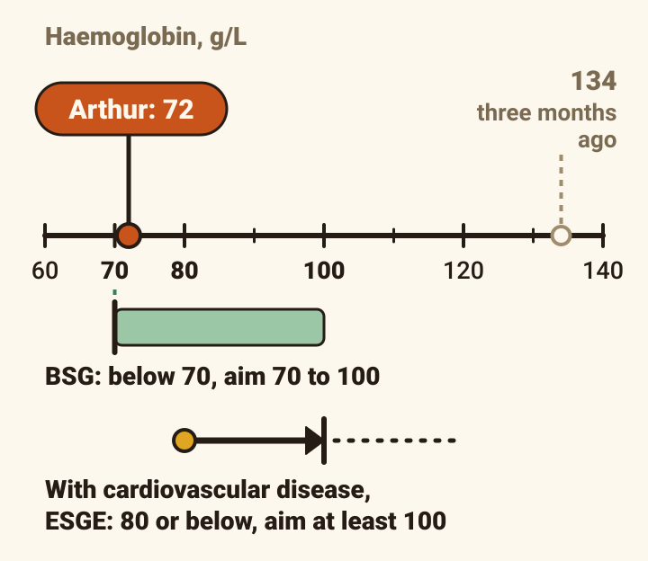
- Fluid first. BSG: if unstable, 500 mL of crystalloid in under 15 minutes. Two large cannulas.
- Blood, BSG: transfuse if haemoglobin is below 70 g/L, and aim for 70 to 100.
- With cardiovascular disease, European guidance (ESGE 2021): transfuse at 80 or below, and aim for at least 100.
- Unstable or bleeding fast: transfuse on clinical grounds. The trials behind these numbers left such patients out. Think major haemorrhage protocol and call critical care.
- Do not overshoot. In the largest trial behind the rule, patients transfused at the higher trigger did worse: 9% died within six weeks against 5%, and 16% bled again against 10%.
- Keep watching. NEWS repeated, urine output measured.
Stop the apixaban. Nothing on the clotting screen will tell you how much is on board.
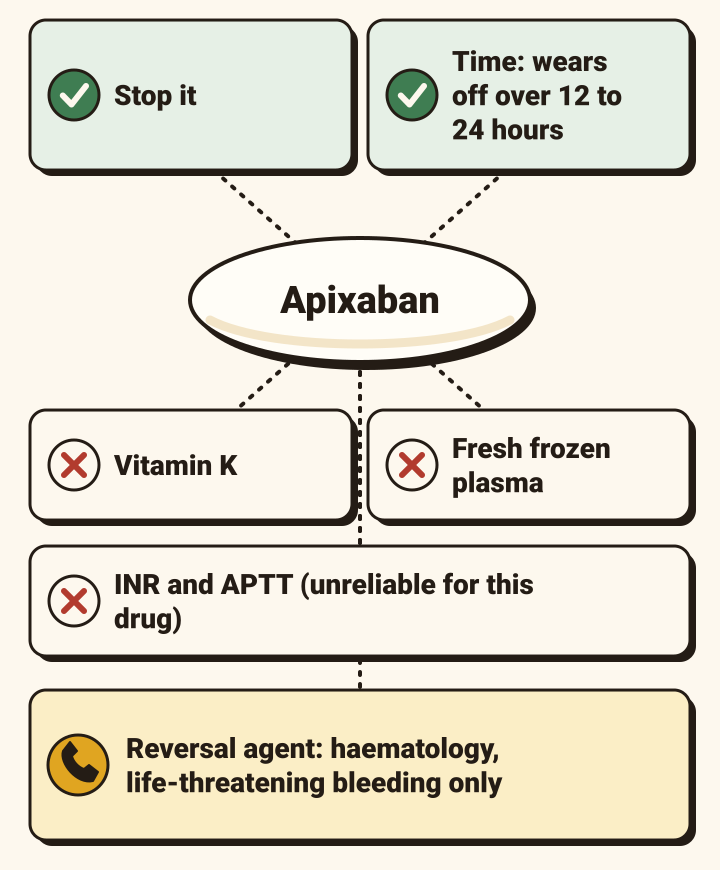
- BSG: suspend the anticoagulant at presentation. This is the first decision, before any talk of reversing it.
- Ask when the last dose was. Arthur took his at 07:30. The effect has usually worn off within 24 hours, longer if the kidneys are failing.
- Vitamin K does nothing. It reverses warfarin. It has no effect on apixaban and the drugs like it.
- A normal INR is no reassurance here. His was 1.1.
- Reversal (andexanet alfa, or prothrombin complex concentrate where that is not available) is for life-threatening bleeding, and is a decision for haematology. It must not delay the endoscopy.
Stop the naproxen, always. The aspirin depends on why he takes it.
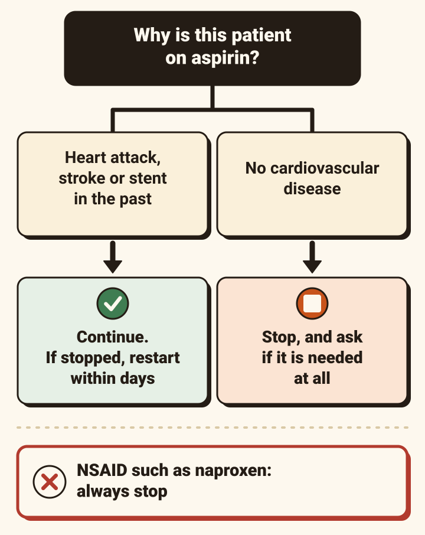
- The BSG bundle says: continue aspirin at presentation. In the case we stopped it with the naproxen. Here is why both can be right.
- The bundle’s evidence is a trial in people taking aspirin for known heart or stroke disease. Stopping it for eight weeks after an ulcer bleed cost lives (12.9% died against 1.3%), at the price of more rebleeding (10.3% against 5.4%).
- Aspirin after a heart attack, a stroke or a stent (secondary prevention): do not stop it. If it has been stopped, restart it within days.
- Aspirin with no cardiovascular disease (primary prevention): later BSG and European guidance supports stopping it, and asking whether it is needed at all.
- Arthur’s aspirin had no recorded reason. So it was stopped.
- The naproxen is never in doubt: stop it (NICE).
If you suspect liver disease, two drugs go in before the camera.
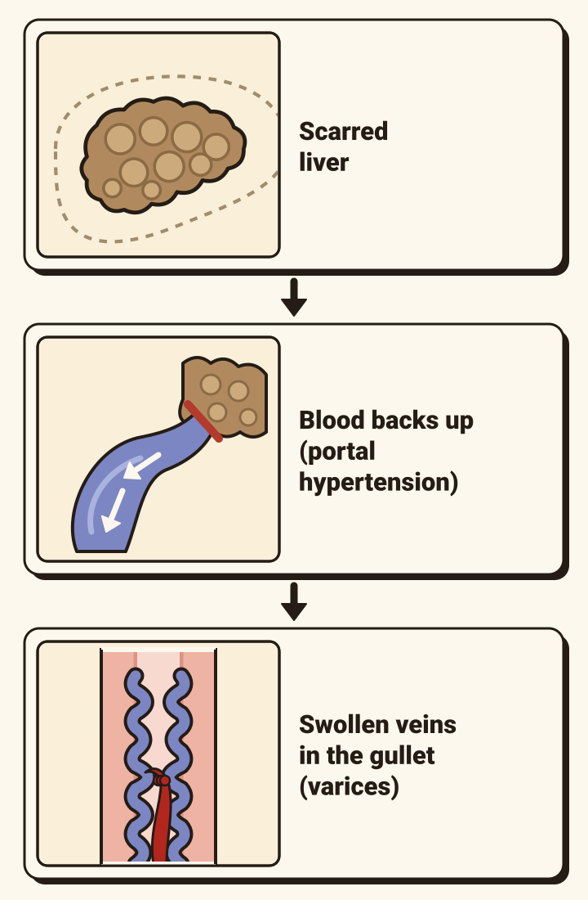
- Suspect it when there are signs of liver disease: jaundice, a swollen fluid-filled abdomen, confusion. Drinking alone is not enough to assume it.
- BSG: terlipressin 2 mg into the vein, four times a day, and antibiotics into the vein, by your local protocol. Both before the endoscopy.
- Terlipressin narrows the blood vessels feeding the gut and lowers the pressure in the varices. It cuts deaths by about a third. Antibiotics cut deaths too.
- Continue until the bleeding is controlled, or for up to 5 days.
- It narrows other vessels as well. BSG: caution in ischaemic heart disease and peripheral vascular disease, and an ECG first in anyone over 65. The BNF adds electrolyte disturbance, including a low sodium, and a history of a long QT interval.
- Arthur had no signs of liver disease and normal liver tests. He did not need it.
His heart is going at 138 and his blood pressure is 96/58. The nurse offers metoprolol.
Swipe sideways to see the whole strip.
- Atrial fibrillation, fast. It is not new: he has been on apixaban for it for about two years.
- He is shocked, and he is bleeding.
21 / 27 · The answer is hidden. Decide first.
Leave the rate alone. Replace the blood, and the rate comes down by itself.
On arrival.
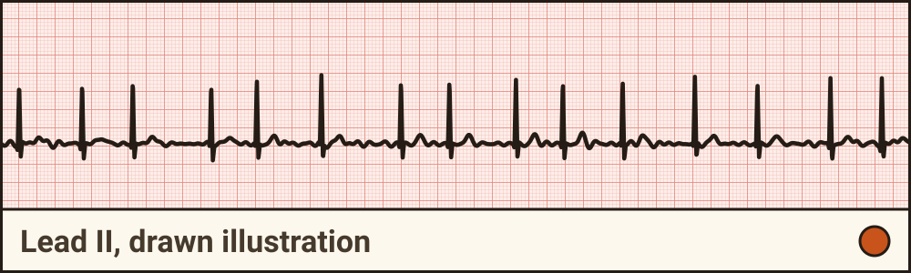
After fluid and blood. No rate-slowing drug given.
Drawn illustration of what the case showed. Swipe sideways to see each whole strip.
- An electric shock (cardioversion) is for a patient whose collapse is caused by the arrhythmia.
- In the case, the repeat ECG shows it. Same rhythm, far slower rate, after resuscitation alone. Taken before any fluid, it had not changed.
- His heart is fast because he is short of blood. A fast rate helps keep the heart’s output up when the circulation is under-filled.
- Slow it hard and you risk taking that away and deepening the shock.
- His collapse is caused by blood loss, not by the arrhythmia.
- Fill him, transfuse him, stop the bleeding. Then look at the rate again.
- We found no trial of rate control in a bleeding patient with atrial fibrillation.
No tranexamic acid. It did not save lives, and it nearly doubled the clots.
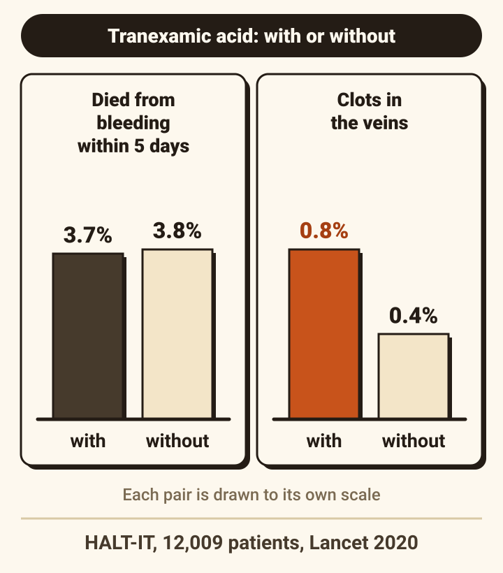
- Tranexamic acid helps in trauma and after childbirth. In bleeding from the gut it does not.
- HALT-IT, 2020: 12,009 patients in 15 countries.
- Deaths from bleeding within 5 days: 3.7% with tranexamic acid, 3.8% without. No difference.
- Clots in the veins (in the leg or the lung): 0.8% against 0.4%. Nearly doubled.
- Seizures were more common as well.
- The BSG bundle does not mention it: the bundle was written before the trial reported. European guidance now says do not use it.
Five more things that feel right and are wrong.

Do not give a PPI routinely before the endoscopy
- Because
- It has not been shown to save lives. The dose that matters comes after the endoscopy.
- Says who
- NICE CG141. European guidance (ESGE) allows it to be considered, as long as it does not delay the camera.
Do not treat the troponin as a heart attack
- Because
- You would be anticoagulating a man who is bleeding.
- Says who
- BSG: suspend anticoagulants. See card 10.
Do not give vitamin K, or trust a normal clotting screen
- Because
- Neither works for apixaban.
- Says who
- BSG and European antithrombotic guideline, 2021.
Do not slow or shock the fast heart
- Because
- The rate is helping to hold his pressure up.
- Says who
- Reasoning, not trial evidence. See card 21. Our reasoning
Do not transfuse a stable patient up to a “normal” count
- Because
- More deaths and more rebleeding.
- Says who
- Villanueva 2013.
The bundle does not end at the endoscopy. Four things still have to happen.
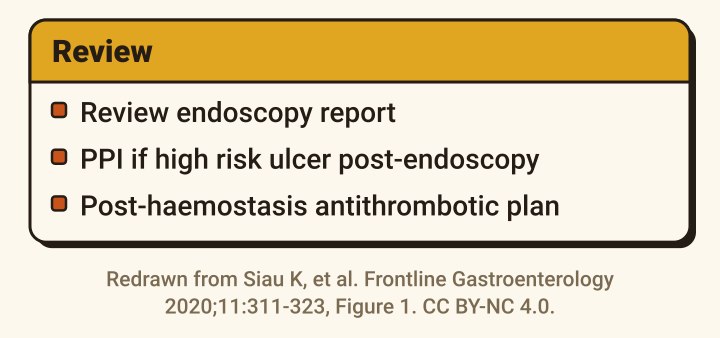
- Read the endoscopy report. It should say what was found, what was done, how secure it is, and what to do if he bleeds again. About 1 in 10 do (9.7% in the 2022 UK audit).
- PPI for a high-risk ulcer. BSG: high dose, into the vein: 80 mg, then 8 mg an hour for 72 hours. This is where the PPI earns its place.
- Test for Helicobacter pylori at this endoscopy. Treat it if found. Test again if negative (ESGE; not a bundle item).
- Write the plan for the blood thinners. Leaving apixaban off for good risks a stroke. Restarting it too soon risks another bleed. It is restarted once the bleeding is controlled, preferably within or soon after 7 days, as a shared decision and with a PPI alongside. Never discharge without the decision written down.
- If he bleeds again: repeat the endoscopy, then the radiologists to block the artery, then the surgeons.
Three explanations fitted the collapse. Only one fitted everything.
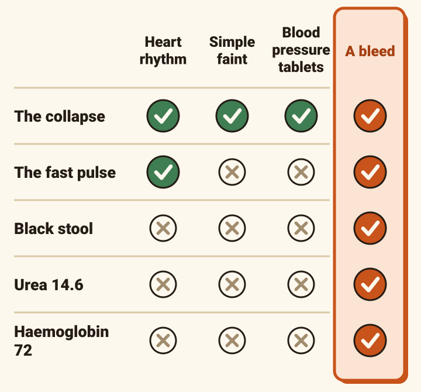
- His heart, a simple faint and his blood pressure tablets each explained the collapse.
- Only a bleed explained the black stool, the urea and the haemoglobin of 72.
- The fast heart was his body coping. Treating the bleed treated the heart.
Five things to carry onto the ward.
![](data:image/svg+xml,%3Csvg%20xmlns%3D%22http%3A//www.w3.org/2000/svg%22%20viewBox%3D%220%200%20260%20180%22%20width%3D%22260%22%20height%3D%22180%22%20fill%3D%22none%22%3E%3Cdefs%3E%3Cpattern%20id%3D%22g%22%20width%3D%2213%22%20height%3D%2213%22%20patternUnits%3D%22userSpaceOnUse%22%3E%3Cpath%20d%3D%22M13%200%20H0%20V13%22%20stroke%3D%22%23C8531B%22%20stroke-opacity%3D%220.18%22%20stroke-width%3D%221%22%20fill%3D%22none%22%3E%3C/path%3E%3C/pattern%3E%3C/defs%3E%3Crect%20x%3D%220%22%20y%3D%220%22%20width%3D%22260%22%20height%3D%2285%22%20fill%3D%22url%28%23g%29%22%3E%3C/rect%3E%3Crect%20x%3D%220%22%20y%3D%22113%22%20width%3D%22260%22%20height%3D%2267%22%20fill%3D%22url%28%23g%29%22%3E%3C/rect%3E%3Cpath%20d%3D%22M0%2085%20H92%22%20stroke%3D%22%23241C15%22%20stroke-width%3D%229%22%20stroke-linecap%3D%22square%22%3E%3C/path%3E%3Cpath%20d%3D%22M168%2085%20H260%22%20stroke%3D%22%23241C15%22%20stroke-width%3D%229%22%20stroke-linecap%3D%22square%22%3E%3C/path%3E%3Cpath%20d%3D%22M92%2085%20L112%2014%20L130%2058%20L148%2039%20L168%2085%22%20stroke%3D%22%23241C15%22%20stroke-width%3D%229%22%20stroke-linecap%3D%22round%22%20stroke-linejoin%3D%22round%22%20fill%3D%22none%22%3E%3C/path%3E%3Cpath%20d%3D%22M0%2099%20H260%22%20stroke%3D%22%23241C15%22%20stroke-width%3D%226%22%3E%3C/path%3E%3Cpath%20d%3D%22M0%20113%20H92%20M168%20113%20H260%22%20stroke%3D%22%23C8531B%22%20stroke-width%3D%229%22%20stroke-linecap%3D%22square%22%3E%3C/path%3E%3Cpath%20d%3D%22M92%20113%20C92%20148%20168%20148%20168%20113%22%20stroke%3D%22%23C8531B%22%20stroke-width%3D%229%22%20stroke-linecap%3D%22round%22%20fill%3D%22none%22%3E%3C/path%3E%3C/svg%3E)
- An unexplained collapse with a fast pulse: do a rectal examination and a lying and standing blood pressure.
- Resuscitate first. Transfuse below 70 and aim for 70 to 100; if he is unstable, do not wait for a number.
- Score him with Glasgow-Blatchford on the first observations. 0 or 1 may go home.
- Stop the blood thinner and the NSAID. Ask why he is on aspirin before you stop it.
- No tranexamic acid. Endoscopy within 24 hours. A written plan afterwards.
Where this comes from.
Main standard
- Siau K, Hearnshaw S, Stanley AJ, et al. British Society of Gastroenterology (BSG)-led multisociety consensus care bundle for the early clinical management of acute upper gastrointestinal bleeding. Frontline Gastroenterology 2020;11:311–323. doi:10.1136/flgastro-2019-101395. The bundle diagram is redrawn from its Figure 1 (CC BY-NC 4.0).
Guidelines
- NICE. Acute upper gastrointestinal bleeding in over 16s: management (CG141). 2012, updated 2016. nice.org.uk/guidance/cg141
- Gralnek IM, et al. Endoscopic diagnosis and management of nonvariceal upper gastrointestinal hemorrhage: ESGE Guideline, Update 2021. Endoscopy 2021;53:300–332. doi:10.1055/a-1369-5274
- Veitch AM, et al. Endoscopy in patients on antiplatelet or anticoagulant therapy: BSG and ESGE guideline update. Gut 2021;70:1611–1628. doi:10.1136/gutjnl-2021-325184
- Tripathi D, et al. UK guidelines on the management of variceal haemorrhage in cirrhotic patients. Gut 2015;64:1680–1704. doi:10.1136/gutjnl-2015-309262
- NICE. Atrial fibrillation: diagnosis and management (NG196). 2021. nice.org.uk/guidance/ng196
- British National Formulary. Terlipressin acetate. bnf.nice.org.uk/drugs/terlipressin-acetate
Trials and studies
- HALT-IT Trial Collaborators. High-dose 24-h infusion of tranexamic acid in acute gastrointestinal bleeding (HALT-IT). Lancet 2020;395:1927–1936. doi:10.1016/S0140-6736(20)30848-5
- Villanueva C, et al. Transfusion strategies for acute upper gastrointestinal bleeding. N Engl J Med 2013;368:11–21. doi:10.1056/NEJMoa1211801
- Sung JJY, et al. Continuation of low-dose aspirin therapy in peptic ulcer bleeding: a randomized trial. Ann Intern Med 2010;152:1–9. doi:10.7326/0003-4819-152-1-201001050-00179
- Stanley AJ, et al. Comparison of risk scoring systems for patients presenting with upper gastrointestinal bleeding. BMJ 2017;356:i6432. doi:10.1136/bmj.i6432
- Blatchford O, et al. A risk score to predict need for treatment for upper-gastrointestinal haemorrhage. Lancet 2000;356:1318–1321. doi:10.1016/S0140-6736(00)02816-6. Score table as reproduced in: Banister T, et al. BMJ Open Gastroenterol 2018;5:e000225. doi:10.1136/bmjgast-2018-000225; and Orpen-Palmer J, Stanley AJ. J Clin Med 2023;12:3678. doi:10.3390/jcm12113678
- Hearnshaw SA, et al. Acute upper gastrointestinal bleeding in the UK: patient characteristics, diagnoses and outcomes in the 2007 UK audit. Gut 2011;60:1327–1335. doi:10.1136/gut.2010.228437. Figures as reprinted in: Nigam GB, et al. Acute upper gastrointestinal bleeding in the UK: 2022 audit update. Gut 2026;75:e335134. doi:10.1136/gutjnl-2025-335134
Background
- Chapman AR, et al. Type 2 myocardial infarction: challenges in diagnosis and treatment. Eur Heart J 2025. doi:10.1093/eurheartj/ehae803
- Tencer T, Waldauf P, Balik M. Treatment of supraventricular arrhythmias in critical care patients with sepsis. Front Cardiovasc Med 2026. doi:10.3389/fcvm.2026.1836476 (the principle of compensatory tachycardia; a review of septic shock)
- Meza Monge K, et al. Navigating hemorrhagic shock. Biomedicines 2024;12:2864. doi:10.3390/biomedicines12122864
- Piccirillo M, et al. Gastrointestinal bleeding in children: diagnostic approach. Ital J Pediatr 2024. doi:10.1186/s13052-024-01592-2 (definition of melaena and its mimics)
Supporting reading
- RCEMLearning. Upper Gastrointestinal Haemorrhage (reviewed 2025); Peptic Ulcer Disease (2022). rcemlearning.co.uk
- Geeky Medics. Upper Gastrointestinal Bleeding: Acute Management (2024). geekymedics.com
Journal articles were retrieved through PubMed and Europe PMC.